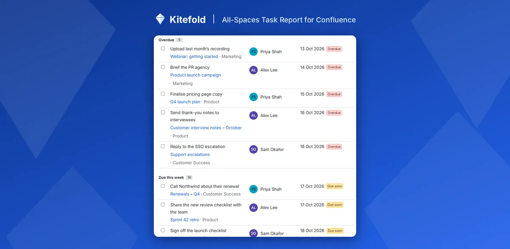

How to find overdue tasks in Confluence
Confluence shows an overdue task's date in red on its page, but none of its built-in views can filter to overdue tasks only. The closest is a Task report sorted by due date. To list every overdue task in every space, with a count, use a report with an Only overdue tasks setting.
With Confluence on its own
Option 1: a Task report sorted by due date
- Edit a page, type
/task reportand choose Task report. - Add the spaces you want in Space(s) and Page(s), and keep Task status on incomplete.
- Set Sort by to Due date and show the due date column. The earliest dates, including overdue ones, come first.
Option 2: your own Tasks list
Select your profile picture (top right) and choose Tasks. Its due-date filter can show your tasks due in a time frame, which you can set to end today. This only covers tasks assigned to you.
Where it falls short
- No overdue filter. Overdue tasks are mixed in with everything due later, and tasks with no due date need checking separately.
- No count. Nothing tells you how many tasks are overdue, by space or by person.
- Spaces one by one in the Task report (CONFCLOUD-71390), and only your own tasks in the Tasks list.
In one step with All-Spaces Task Report
- Add All-Spaces Task Report to a page (type
/while editing). - In its settings, either tick Only overdue tasks, or set Group by to Due date (overdue first) to see Overdue, Due this week, Later and No due date as separate groups.
- Publish. The header shows how many tasks are overdue across everything that matches, and each overdue row has an Overdue label.
Add Group by: Assignee to see who has the most overdue work, or set Assignee to Me so each viewer sees only their own. You can tick a task done straight from the report.

Disclosure: Kitefold makes All-Spaces Task Report, so we're not neutral. The built-in options above are free and may be all you need.
Related guides
- How to see all tasks across Confluence spaces
- How to see all the Confluence tasks assigned to you
- How to send a weekly reminder for overdue Confluence tasks
- Confluence tasks cheat sheet
Checked against Confluence Cloud in November 2026. Confluence changes often; if something here no longer matches what you see, email support@kitefold.app and we'll update it.